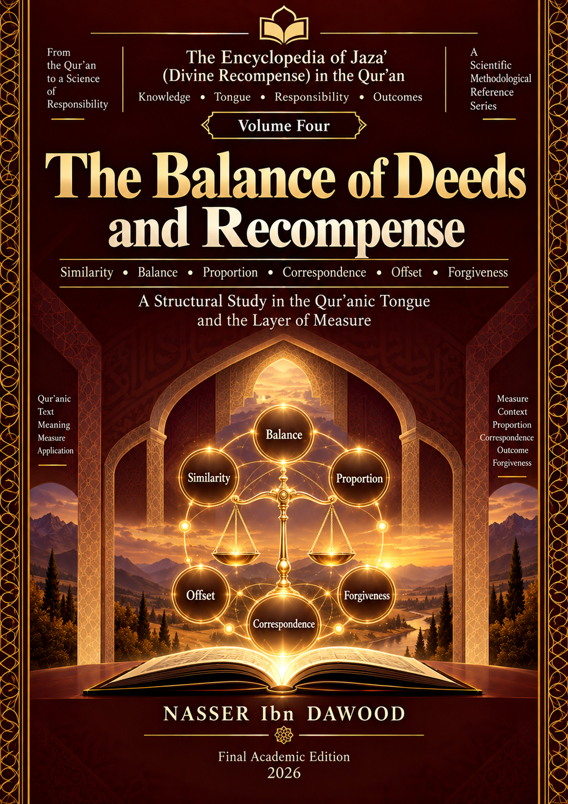

Nasser Ibn Dawood
Text extracted from the author-supplied Word edition; consult the original source.
Preparing the reader…
ENCYCLOPEDIA OF THE ENGINEERING OF RECOMPENSE IN THE QUR’AN
THE MEASURE OF RECOMPENSE
Punishment, Correspondence, Proportion, Pardon, and Grace
Volume Four — Condensed Conceptual English Edition
──────────────────────────────────────────
From lexical boundaries to the architecture of response, limit, execution, non-execution, and positive overflow
NASSER IBN DAWOOD
2026
Project: Fiqh al-Lisān al-Qurʾānī (فقه اللسان القرآني) — Engineering of Revelation
This condensed edition preserves the book’s conceptual architecture and scientific status. It is not a substitute for the 769-page Arabic reference edition.
I. The Global Knowledge Manifesto
Knowledge is a universal right. The author firmly believes that wisdom should not be locked behind paywalls or language barriers.
Global Access Policy: All books in this library are available for free in multiple digital formats (PDF, HTML, DOCX, TXT).
The Digital Library: As of early 2026, the collection hosts 68 volumes (34 in Arabic and 34 in English), fully optimized for AI-assisted research and digital archiving.
Official Platform — Main Website: nasserhabitat.github.io/nasser-books/
GitHub: nasserhabitat/nasser-books
The purpose of this publication policy is not merely distribution. It is methodological: a claim that cannot be revisited, tested, compared, and criticized remains weaker than a claim whose evidence and procedure are visible to the reader.
II. Translator’s Note — The Bridge of Meaning
This English edition is a condensed conceptual adaptation. It is not a word-for-word translation. Its task is to carry the architecture of the argument, the hierarchy of claims, the methodological cautions, the principal Qur’anic test cases, and the research status of each major component into readable academic English.
Qur’anic terms are therefore retained whenever translation alone would flatten the analysis. A term such as Mīzān (ميزان) is rendered with an English equivalent—measure, balance, or calibration—while the Arabic form remains visible. The same principle applies to ʿAdl (عدل), Qisṭ (قسط), Qiṣāṣ (قصاص), ʿAfw (عفو), Ṣafḥ (صفح), Ghufrān (غفران), Faḍl (فضل), Ziyāda (زيادة), and Muḍāʿafa (مضاعفة).
The edition also preserves the author’s distinction between a useful model and a law. A repeated relation may justify an analytical model without authorizing a universal causal rule. A lexical nucleus may close within a declared corpus while another layer remains open. The condensed form must not strengthen a claim merely because it has fewer pages.
Verse references are normally given by sūrah name and verse number. Where a passage serves as a test case, the present edition summarizes its analytical function rather than reproducing the Arabic text in full.
Contents
1. Orientation — From Lexicon to Architecture
2. Method — Reading by Corpus, Resistance, and Claim Rank
3. Section One — From the Word to the Network
4. Section Two — The Architecture of Correspondence
5. Section Three — Instruments of the Mīzān
6. Section Four — The Architecture of the Limit
7. Section Five — The Architecture of Fulfilment and Execution
8. Section Six — The Architecture of Non-Fulfilment
9. Section Seven — The Architecture of Positive Overflow
10. Section Eight — Governance of Measurement
11. Seven Conceptual Reversals
12. A Reusable Reader’s Protocol
13. Limits: What the Book Does Not Claim
14. Scientific Status at the Freeze Point
15. Conclusion — When the Reader Enters the Laboratory
Glossary of Core Terms
Condensed target: under 30 pages. This edition selects the conceptual spine rather than reproducing chapter-by-chapter detail.